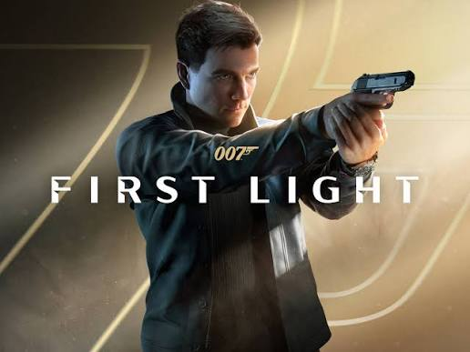

007 First Light
007 First Light é um jogo de ação e aventura, desenvolvido e publicado pela IO Interactive. O jogo faz parte da franquia James Bond e foi lançado em 27 de maio de 2026 para Microsoft Windows, Xbox Series X/S e PlayStation 5, a versão do Nintendo Switch 2 lançada mais tarde no ano.
007 First Light apresenta uma narrativa original inspirada nos romances e contos de Ian Fleming, bem como na duradoura franquia cinematográfica estrelada pelo personagem. Descrito como uma história de origem para o personagem, o jogo acompanha um James Bond jovem e inexperiente, um agente do MI6 que é incumbido de uma missão cujo sucesso lhe garantirá o status 00.
Após o lançamento de 007 Legends em outubro de 2012, a publicadora Activision teve sua licença não exclusiva para produzir jogos eletrônicos da franquia James Bond revogada pela Metro-Goldwyn-Mayer (MGM) e pela Eon Productions, resultando em um hiato prolongado de novos jogos baseados na série.
Em novembro de 2020, a MGM, a Eon Productions e a IO Interactive anunciaram o desenvolvimento de um novo jogo da franquia James Bond. O título entrou em produção completa na IO Interactive após a conclusão de Hitman 3, e foi revelado oficialmente em junho de 2025. First Light foi bem recebido pela crítica e vendeu mais de quatro milhões de cópias.

Enredo
O oficial aéreo da Marinha Britânica James Bond (Patrick Gibson) tem seu helicóptero do Serviço Aéreo Especial abatido em uma missão de resgate na Islândia. Buscando ajuda, é contatado por rádio pelo MI6, que o direciona para uma base de pesquisas próximas. Bond descobre que a base, originalmente montada para pesquisar um satélite caído, foi tomada pela organização terrorista Arrowhead, que mantém os cientistas reféns enquanto tenta recuperar o satélite. Desafiando ordens, Bond resgata os cientistas e detona explosivos que destroem a base, eliminando os mercenários enquanto impedia que o satélite caísse em mãos inimigas.
Um mês depois, Bond é chamado para o MI6, onde M (Priyanga Burford) quer recrutá-lo para o revivido departamento de Agentes 00. Sob o estrito e relutante instrutor John Greenway (Lennie James), Bond passa nos treinamentos em Malta, onde fica próximo dos outros recrutas, principalmente Cressida Bright (Jessica Rhodes), filha do Secretário das Relações Exteriores Stephen Bright (Timothy Bentick), e Lennox Monroe (Chris O'Reilly), além de conhecer o pesquisador e armeiro do MI6 Q (Alastair Mackenzie) e Miss Moneypenny (Kiera Lester), encarregada de dar missões aos agentes. Os Agentes 00 são eventualmente mandados para interceptar Rhys Beckett, o renegado ex-agente 009, se infiltrando em um hotel na Eslováquia, onde ocorre um torneio de xadrez. Bond decide seguir um funcionário suspeito que ele descobre ser um de dois assassinos gêmeos, os Murtos (Anssi Lindstrom). A dupla mata Monroe e detona uma bomba que fere Cressida e causa a morte de mais dois recrutas, e enquanto Beckett foge, Bond o persegue com a ajuda de uma mulher misteriosa (Noemie Nakai), chegando a um aeroporto. Bond embarca no avião de Beckett e antes de pular fora, deixa seu relógio para servir como rastreador, revelando que o eventual destino foi a Mauritânia.
Desenvolvimento
007 First Light é o primeiro grande jogo da franquia James Bond após o fracasso comercial e de crítica de 007 Legends, que resultou na revogação da licença não exclusiva da publicadora Activision para produzir jogos baseados na propriedade intelectual da franquia. A licença foi retirada em janeiro de 2013 por Eon Productions e Metro-Goldwyn-Mayer (MGM).
A desenvolvedora da série Hitman, a IO Interactive, reuniu-se com a Eon Productions para apresentar sua própria visão de um jogo da franquia James Bond, enquanto ainda trabalhava em Hitman 3. Segundo o presidente da empresa, Hakan Abrak, o estúdio teve a impressão de que "[a Eon] não estava procurando por um jogo", devido à insatisfação com o estilo de ação exagerada dos últimos jogos da franquia lançados para consoles sob a licença da Activision. O diretor criativo da IO Interactive, Christian Elverdam, afirmou que um dos pontos centrais da proposta apresentada à Eon foi o afastamento da dependência de armas para completar missões, destacando o trabalho realizado em Hitman como um exemplo de jogabilidade onde soluções violentas são desencorajadas. Isso convenceu a Eon de que havia uma "sofisticação" na abordagem da IO ao gênero de espionagem.
Lançamento
A IO Interactive realizou uma transmissão ao vivo em 19 de novembro de 2020 para anunciar seu próximo jogo após o então iminente Hitman 3, que terminou com a revelação de Project 007, um novo jogo da franquia James Bond com uma história original, desenvolvido e publicado pela IOI em colaboração com a Metro-Goldwyn-Mayer e a Eon Productions. O anúncio coincidiu com o início oficial do desenvolvimento nos estúdios da IOI na Dinamarca e Suécia. O jogo está sendo desenvolvido com a Glacier Engine para “sistemas e plataformas modernas”. Em fevereiro de 2025, o Amazon MGM Studios assumiu as funções de supervisão do título após adquirir os direitos criativos e de produção da franquia James Bond da Eon e dos antigos produtores da série cinematográfica, Michael G. Wilson e Barbara Broccoli. Com isso, tornou-se o primeiro jogo da franquia a ser lançado após a saída da Eon da série.
O jogo foi confirmado para o Nintendo Switch 2 durante a edição de abril de 2025 do Nintendo Direct. O título foi oficialmente revelado como 007 First Light em 2 de junho de 2025, com o primeiro trailer apresentado durante o State of Play da Sony Interactive Entertainment em 4 de junho, e uma apresentação mais detalhada programada para o evento digital IOI Showcase em 6 de junho.